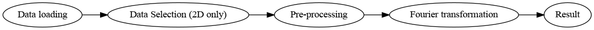

Processing pipeline
Overview
This page provides a conceptual overview of the transient nutation analysis workflow implemented in this package.
The pipeline transforms raw experimental data into frequency-domain spectra through a sequence of well-defined processing steps.
Pipeline structure
The overall workflow can be summarised as:

Step-by-step description
1. Data loading
Experimental data are loaded from .DTA / .DSC files.
1D datasets: directly loaded as time-domain signals
2D datasets: loaded as field-resolved data matrices
2. Data selection (2D only)
For two-dimensional datasets, a single field slice is selected to obtain a time-domain signal.
3. Pre-processing
A sequence of optional processing steps is applied to the time-domain signal.
These may include:
baseline correction
signal reconstruction
mean subtraction
window functions
The exact steps are controlled via the parameter configuration.
4. Fourier transformation
The processed time-domain signal is transformed into the frequency domain.
Optional features:
zero-filling (resolution enhancement)
reference frequency scaling
5. Result
The final result consists of:
time-domain signal (processed)
frequency-domain spectrum
For 2D workflows, this process is applied to each field slice individually, resulting in a 2D frequency-domain dataset.
Relation to implementation
The pipeline is implemented through the following functions:
tna.functions.run_tna()for single datasetstna.functions.run_tna_2d()for full 2D processing
Processing steps are applied internally via a configurable pipeline defined by the parameter object.